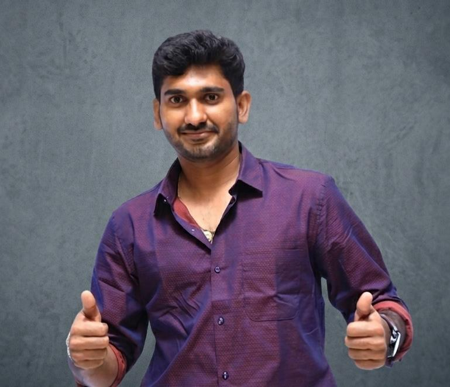
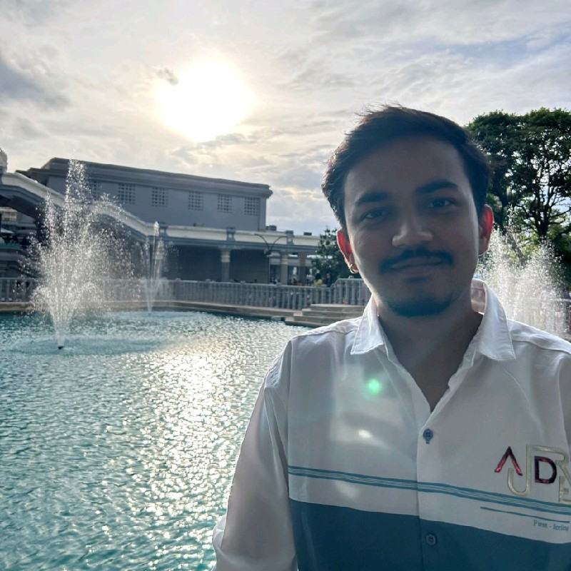
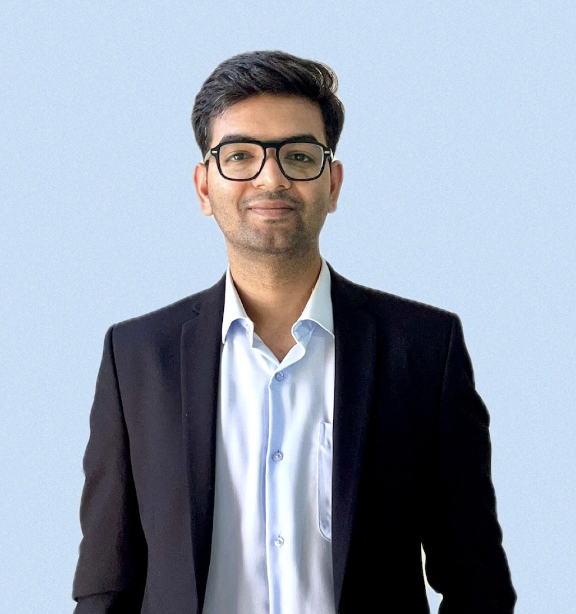

CO-FOUNDER
Amit Kumar
Project management & AI engineering
Lead AI Engineer, SproutsAI
Previously Jaguar Land Rover
IIT Kharagpur ’22
THE FOUNDING TEAM
AI engineering, software and product strategy. Built by people who build.

CO-FOUNDER
Project management & AI engineering
Lead AI Engineer, SproutsAI
Previously Jaguar Land Rover
IIT Kharagpur ’22

CO-FOUNDER
Software & AI engineering
Software Engineer, Deliveroo
Previously Swiggy
IIT Kharagpur ’21

CO-FOUNDER
Product management & strategy
Consultant, Deloitte
Previously Jaguar Land Rover
IIT Roorkee ’20 · MBA, ISB